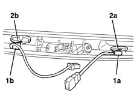

7015B48 Tailgate OPENING CONTROL - R.R.
- Path
- Procedures > 70 FITTINGS > 7015 TAILGATE/ > 7015B tailgate locking/opening devices > 7015B48 Tailgate OPENING CONTROL - R.R.
- Kind
- repair procedure (removal / refitting; the operation number is the code)
- Applies to
- all engines; all production periods
- Interactive page
- https://sloeber94.github.io/elrnDB-lYpsln/en/#/2429539
Applies to: all engines; all production periods
 Removing
Removing
 Refitting
Refitting7015A04 tailgate interior panel - r+r
7015B30 exterior handle or block support - r+r with panel/protection removed
1. Release the control (1a or 1b) from its housing and keep it.
2. If necessary, release the rubber diaphragm (2a or 2b) from the housing.

Applies to: all engines; all production periods
Refitting
RemovingCheck the control is undamaged.
Fit the rubber diaphragm in position.
Attach the control device in position.
7015B30 exterior handle or block support - r+r with panel/protection removed
Topics linked from this page (2)
- 7015A04 tailgate interior panel - r+r
- 7015B30 exterior handle or block support - r+r with panel/protection removed